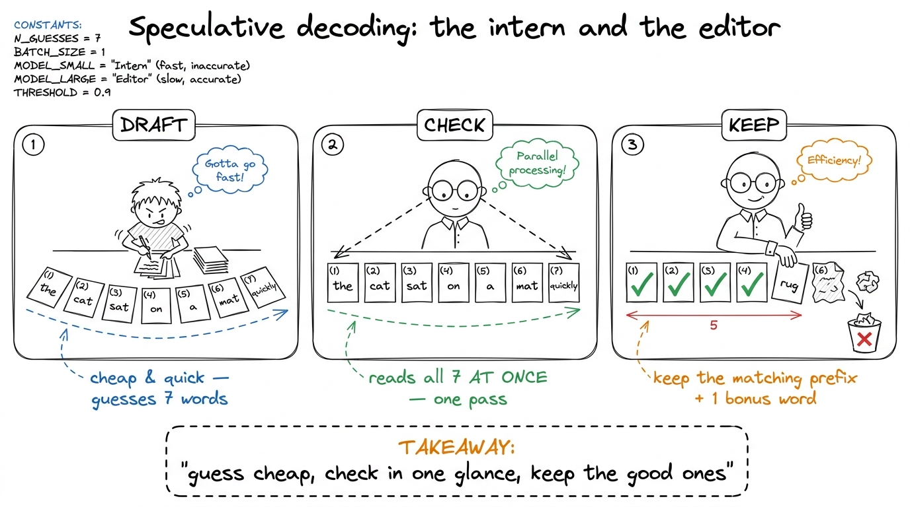
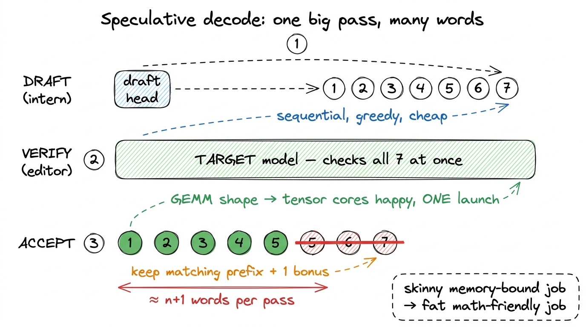
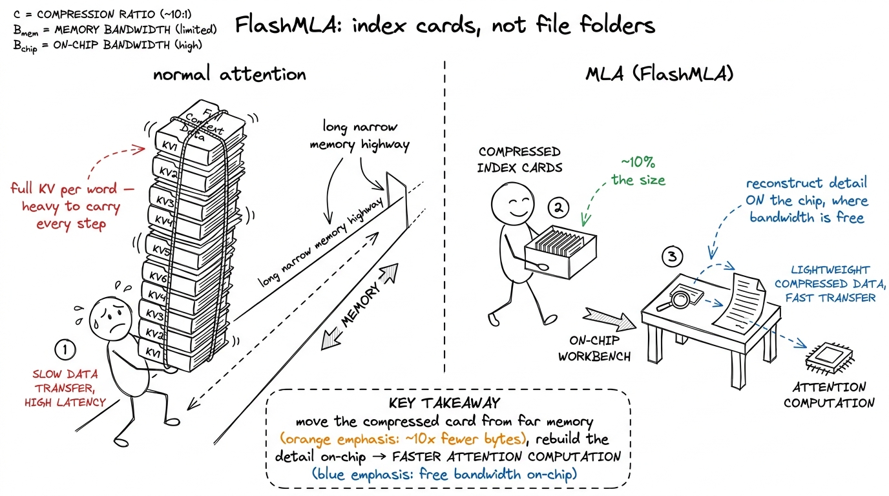
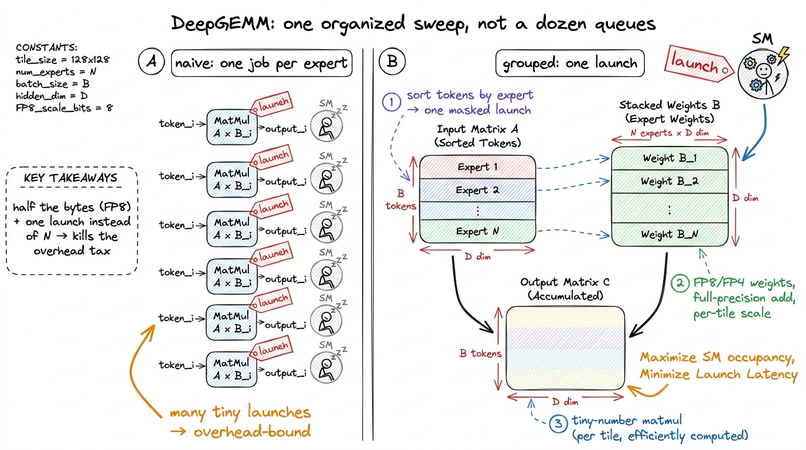
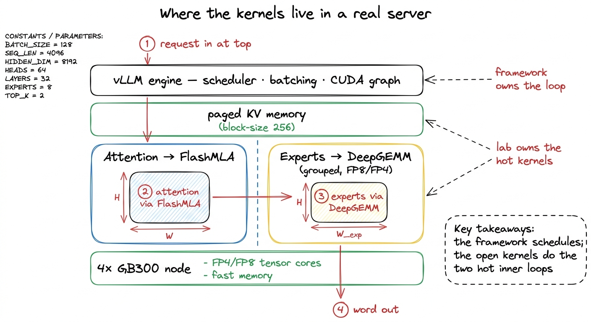

Teaching DeepSeek & DSpark: kernels behind a frontier model
By the end of this chapter you'll be able to stand at a whiteboard and teach the finale of the whole workshop: how a real frontier AI lab — DeepSeek — writes and gives away its own GPU kernels, and how a trick called speculative decoding makes a giant model answer faster. This is the payoff chapter. Everything students learned about feeding the cooks and fusing launches comes together here, in code that is serving millions of people right now.
Don't be scared of the big names — FlashMLA, DeepGEMM, DSpark. By the end they'll feel like old friends, built from the same three tricks the students already know.
The one-sentence frame to open with
Say this first, and let it hang in the air:
A frontier lab like DeepSeek sells a model, not a compiler. So why spend engineer-years writing GPU kernels? Because their model has a weird shape, and off-the-shelf tools (like NVIDIA's cuBLAS) aren't tuned for weird shapes. When your car is a weird shape, no factory sells parts that fit — you machine your own. That's the whole chapter in one metaphor.
What DSpark actually is (keep it simple)
DSpark is DeepSeek's inference-optimized model. Two numbers are all students need:
- It has 1.6 trillion total parameters — an enormous brain.
- But it only uses 49 billion of them to answer any single word — a small, fast slice.
Why answering is the slow, painful part
Remind students of the cafeteria idea. Generating text happens one word at a time. To produce a single word, the GPU has to drag a mountain of numbers out of far-away memory, do a trickle of math, and emit one word. Then do it all again for the next word.
So the entire game of fast AI serving is: move fewer numbers, and stop making the GPU wait between tiny jobs. Hold that thought — every trick below is one of those two things.
The big idea: speculative decoding (guess ahead, then check)
Here's the star of the show. Instead of grinding out one word per expensive step, what if we could produce several?
Why is "check all seven at once" so much cheaper than writing seven? Because checking seven words you already have in hand has no waiting-in-line — you can look at all of them in parallel. In GPU terms, writing one word is a skinny, memory-starved job; checking seven is a fat, math-friendly job that lights up the tensor cores. You turned a starving job into a well-fed one.

figure rendering · The core metaphor: a cheap intern guesses several words, a careful ediNow show the technical translation of the same picture, so they can connect the cartoon to the real pipeline.

figure rendering · The technical translation: draft is sequential and cheap, verify is onThe three stages, in the mentor's own words
You'll teach speculative decoding in three beats. Here they are, each with the confusion to watch for.
Beat 1 — Drafting. The intern (a small "draft head" bolted onto the model) writes seven guesses, one after another. This must be sequential — word 2 depends on word 1. And each guess is a tiny job, so the danger is the GPU spending all its time starting jobs rather than doing them.
The fix for tiny-job overhead is one students already know: fuse the launches. DeepSeek records the whole seven-step draft as a single "CUDA graph" — one pre-recorded batch of work you press play on — so you pay the start-up cost once, not seven times. And the drafts are "greedy" (just pick the single most likely word, no fancy dice-rolling), which means no extra sampling kernels cluttering the hot path.
Beat 2 — Verifying. Hand the full model all seven guesses and ask, in one pass: "at each spot, what word would you have picked?" Because you already hold all seven inputs, this runs in parallel — the fat, tensor-core-friendly job.
Beat 3 — Accepting. Walk the seven left to right, keep every word that matches, stop at the first mismatch, and add one bonus word. The beautiful guarantee: the final text is exactly what the model would have written on its own — same quality, just faster. You're not cutting corners; you're skipping redundant work.
num_speculative_tokens: 7 with greedy drafting, exactly this pipeline. When acceptance stays high, the effective words-per-pass climbs to several, and decode latency drops by roughly that same factor. Speculative decoding is one of the biggest reasons chatbots feel snappy instead of sluggish.Why the check is cheap enough to be worth it (the two kernels)
Speculation only wins if the editor's check-pass is genuinely cheap. That's where DeepSeek's two homemade kernels come in — and each fixes one half of the model's forward pass.
FlashMLA — attention that moves fewer bytes
Attention is the part of the model that lets each word look back at all previous words. To do that, the model keeps a "memory" of every past word, called the KV cache. Long conversation → giant cache → tons of bytes to drag around on every step. That cache is the single biggest thing being moved from memory during decode.
FlashMLA is the kernel that pulls this off: it grabs the scattered little index cards, unfolds them into full detail inside the chip's fast scratchpad (never writing the bulky version back to slow memory), and runs the attention math — all fused into one smooth pass so the GPU never stalls waiting.

figure rendering · FlashMLA taught as index cards versus file folders: carry the tiny comDeepGEMM — running the experts in one cheap batch
The other half is the experts (the MoE part). Each word picks a few specialists, and each specialist is a big matrix multiply. Doing them naively means firing dozens of tiny separate jobs — the exact overhead trap.
DeepGEMM does two things at once: it groups all the experts into a single launch (the post-office sweep), and it runs the numbers in FP8/FP4 — tiny 8-bit and 4-bit numbers instead of chunky ones. Fewer bits per number means fewer bytes to move — a near-linear speed-up in a memory-bound world. The clever bit is scaling: each little tile of the matrix gets its own scale factor so the tiny numbers don't lose accuracy, while the additions still happen in full precision. Half the bytes, and the model stays just as smart.
1 DeepGEMM's other quiet flex: it's only a few hundred lines of readable CUDA. Production GEMM libraries are famously impenetrable walls of template code. DeepSeek's is small enough to teach from — the honest, legible answer to "how do you actually do FP8 matrix-multiply with block scaling." A gift to learners, not just to servers.

figure rendering · DeepGEMM packs all the experts into a single grouped, low-precision maHow it all clicks together on real hardware
Zoom out to the full serving picture — this is the "and this is where it earns money" slide. DSpark's reference setup runs on a single node of four GB300 GPUs. The serving framework (vLLM) owns the outer loop — scheduling, batching, recording the CUDA graph — and hands the two hottest inner jobs to DeepSeek's kernels: attention to FlashMLA, experts to DeepGEMM.
The one honest wrinkle to mention: speculation makes batches ragged — every sequence keeps a different number of words each step, so the work is lumpy. The grouped mega-MoE kernel and the pre-recorded CUDA graph are exactly what keep the GPUs busy through that lumpiness instead of stalling.

figure rendering · The full serving stack: vLLM manages the loop and delegates attentionThe lesson to send them home with
Tie the bow. Everything in this final chapter is the same three levers from day one, just aimed at a real model:
- Move fewer bytes — the 10%-size KV cache (FlashMLA), FP8/FP4 numbers (DeepGEMM).
- Fuse the launches — greedy drafting, one acceptance step, the whole cycle recorded as one CUDA graph.
- Keep the cooks fed — grouped expert GEMMs so no GPU sits idle on ragged work.
You can now teach
- Speculative decoding as the intern-and-editor story — guess several words cheap, check them all in one glance, keep the matching prefix plus a bonus — and why it turns a starving job into a well-fed one.
- Mixture of Experts (DSpark) as a huge hospital with a few doctors per patient: 1.6T total parameters, 49B active, huge brain and small bill.
- FlashMLA as index cards instead of file folders — a ~10× smaller KV cache rebuilt on-chip — and why that makes the verify pass cheap enough for speculation to pay off.
- DeepGEMM as one organized post-office sweep instead of a dozen queues — grouped, low-precision expert matmuls that halve the bytes and pay launch cost once.
- The full serving picture: vLLM owns the loop; the lab's two open kernels do the hot inner work on a four-GPU node.
- The closing lesson: why a frontier lab writes and open-sources its own kernels — for a weird-shaped model, the kernel is the product, and it's built from the exact three levers the whole workshop taught.